Sebelum mulai
Mengelola data guru, akun, laporan, rekap, kalender, dan backup. Bab 01 sampai 10.
Absen di depan kamera, lalu melihat riwayat dan mengajukan izin dari HP. Bab 03 dan 11.
Menyetujui izin dan memantau kehadiran dari HP. Bab 06 dan 12.
Akses: admin /login guru /guru pimpinan /pimpinan. Alamat lengkapnya ada di menu Pengaturan aplikasi.
Masuk ke Aplikasi
Untuk: Admin / Operator- Buka SIGAP di browser komputer sekolah (http://127.0.0.1:5000), atau gunakan jendela absensi yang terbuka setelah aplikasi dinyalakan.
- Ketik username akun Anda.
- Ketik password (tampil sebagai titik).
- Tekan Masuk.
- Menu di sisi kiri menyesuaikan hak akses akun. Tombol keluar ada di pojok kiri bawah.
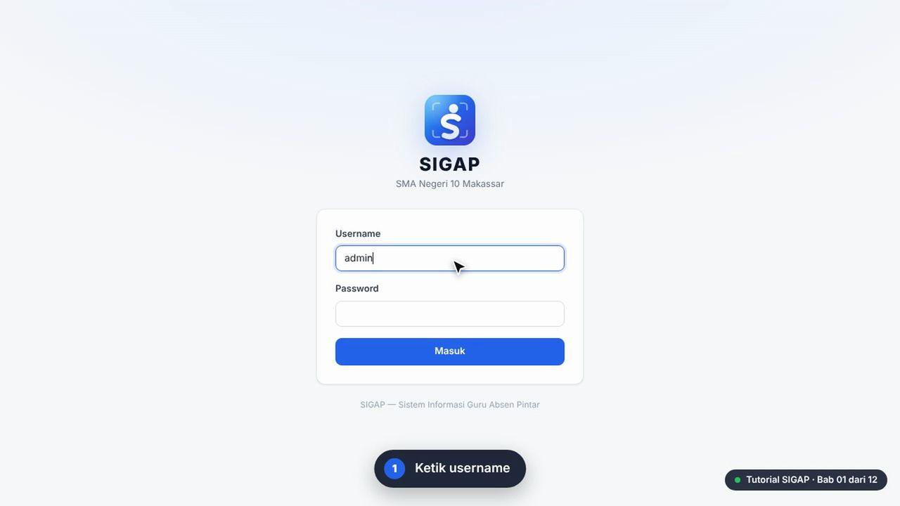
Dashboard
Untuk: Admin / Operator- Baca kartu angka di bagian atas: Total guru, Tepat waktu, Terlambat, Izin / Sakit, dan Belum hadir.
- Perhatikan pemberitahuan penting, misalnya pengajuan izin yang menunggu atau guru yang belum memiliki data wajah.
- Pada tabel Kehadiran hari ini, lihat jam masuk, jam pulang, dan status tiap guru.
- Tombol Buka Absensi di pojok kanan atas membuka layar kamera.
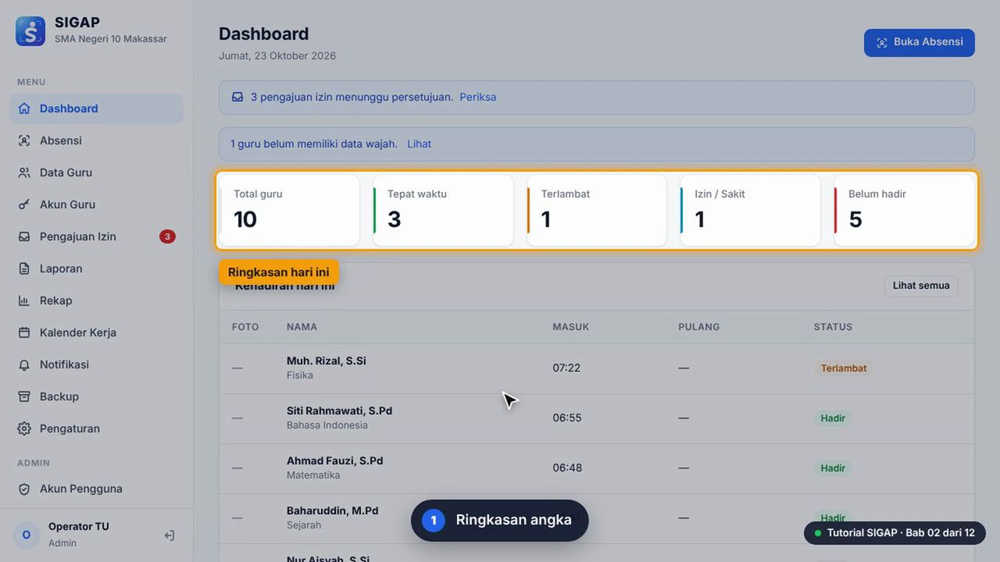
Absensi dengan Kamera
Untuk: Admin / Operator, guru- Buka menu Absensi di komputer yang diletakkan di pintu masuk atau ruang guru. Kamera aktif dan status menunjukkan Siap.
- Guru menghadap kamera dan menengok sedikit ke kiri atau kanan. Ini pemeriksaan wajah asli supaya foto atau layar HP ditolak.
- Nama dan tingkat kemiripan tampil di layar, lalu absen masuk tercatat dan sistem menyapa lewat suara.
- Saat jam pulang, guru menghadap kamera lagi dan absen pulang tercatat.
- Beberapa wajah dapat dikenali sekaligus. Daftar hadir hari ini tampil di sisi kanan layar.
- Pilihan Suara dan Layar penuh ada di pojok kanan atas.
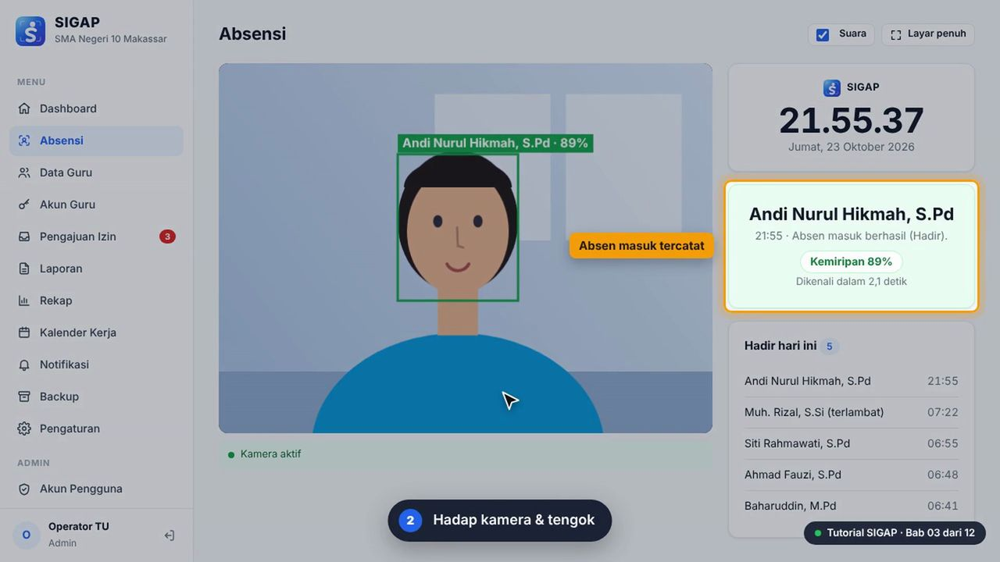
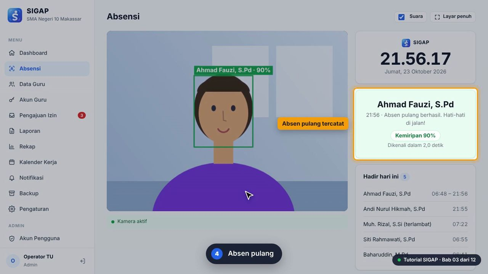
Data Guru
Untuk: Admin- Buka Data Guru. Gunakan kolom pencarian untuk mencari nama, NIP, atau mata pelajaran.
- Klik Tambah Guru, isi nama lengkap, NIP/NUPTK, mata pelajaran, dan status, lalu Simpan.
- Klik Wajah pada baris guru. Jendela kamera terbuka.
- Klik Ambil 5 Sampel (atau tekan Spasi) sambil guru menggerakkan kepala sedikit.
- Klik Simpan, atau Simpan & berikutnya untuk langsung mendaftarkan guru lain tanpa menunggu.
- Ikon pensil dan tempat sampah pada tiap baris dipakai untuk mengubah atau menghapus data guru.
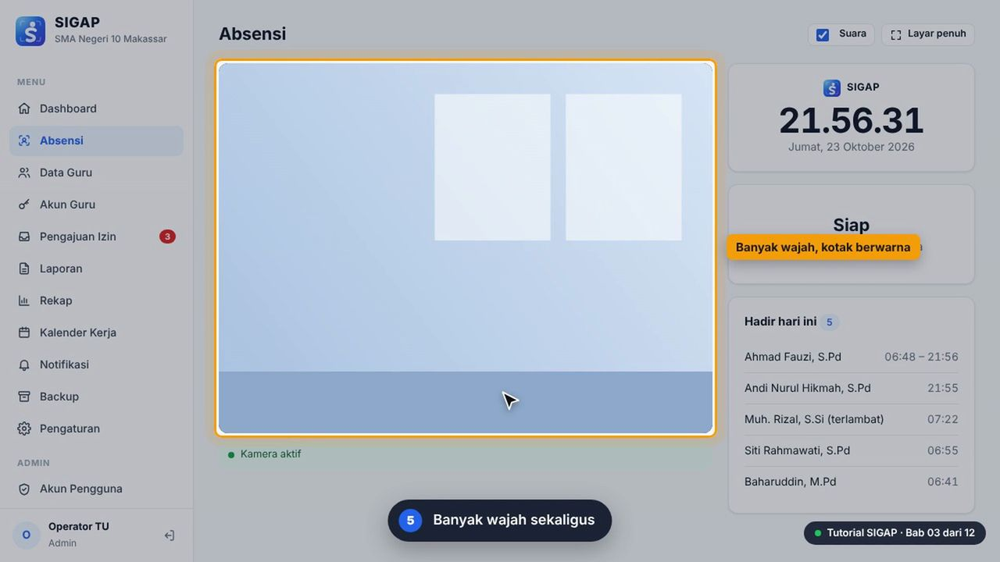
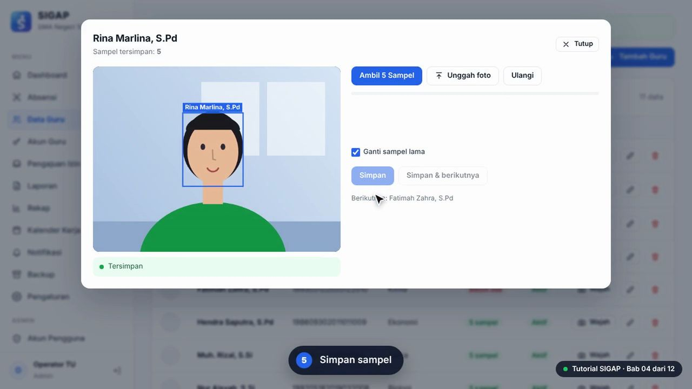
Akun Guru
Untuk: Admin- Buka Akun Guru, lalu klik Buat akun untuk semua guru.
- Daftar password sementara tampil satu kali. Klik Cetak atau salin, lalu bagikan ke masing-masing guru.
- Saat pertama masuk, guru diminta membuat password sendiri.
- Di bagian Daftar akun, admin dapat mengganti username, mengatur password, Reset password, atau menghapus akun.
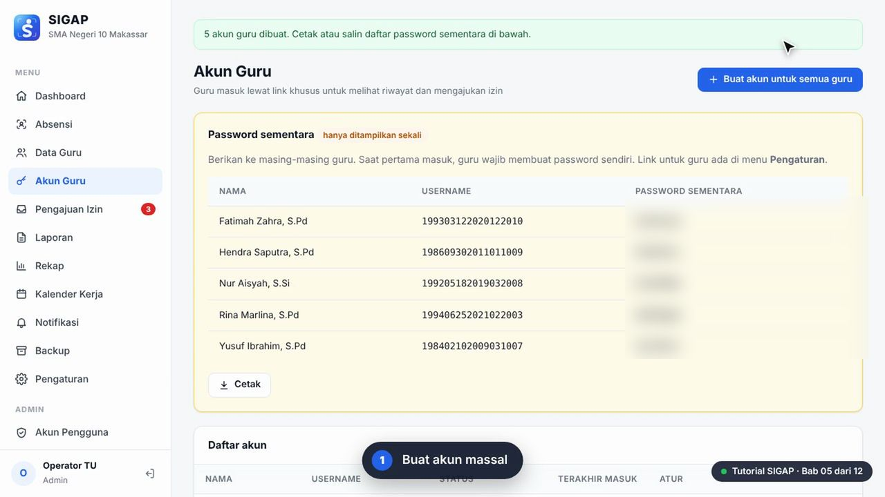
Pengajuan Izin
Untuk: Admin, Kepala Sekolah, Wakasek- Buka Pengajuan Izin dan pilih tab status: Menunggu, Disetujui, Ditolak, Dibatalkan, atau Semua.
- Lihat progres persetujuan pada tiap pengajuan: Kepala Sekolah, Wakasek Kurikulum, dan Admin.
- Klik Setujui atau Tolak dari akun masing-masing. Penolakan wajib disertai alasan.
- Atur siapa saja yang wajib menyetujui di Aturan persetujuan, termasuk apakah semua harus setuju atau cukup salah satu.
- Izin yang disetujui otomatis tercatat di laporan untuk hari kerja pada rentang tanggalnya.
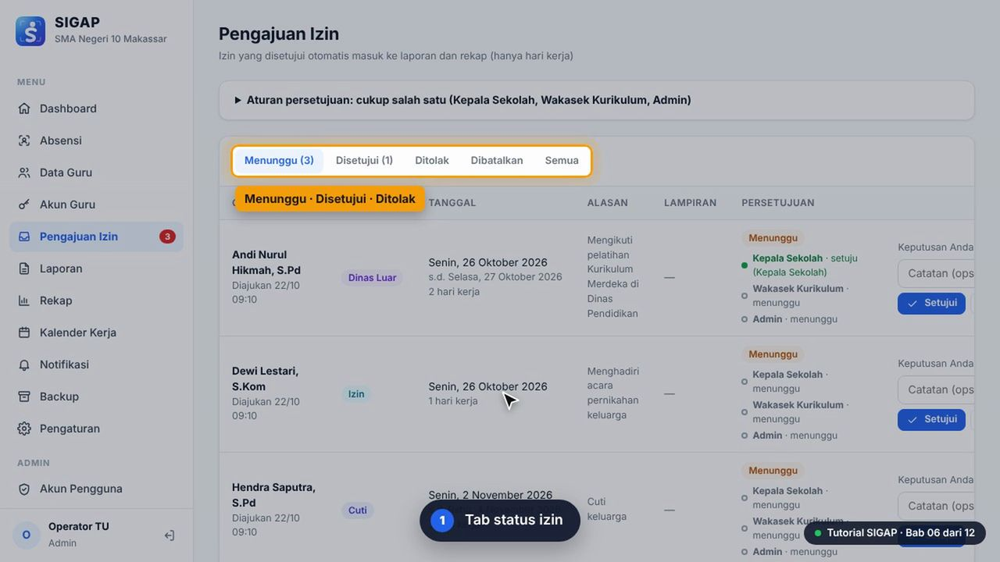
Laporan Harian
Untuk: Admin, Operator- Buka Laporan dan pilih tanggal.
- Baca ringkasan jumlah Hadir, Belum hadir, Terlambat, dan Izin di bagian atas.
- Tabel menampilkan jam masuk, jam pulang, status, tingkat kemiripan, dan foto bukti absen.
- Untuk guru yang tidak absen wajah, klik Ubah lalu isi status manual (Izin, Sakit, Dinas Luar, Alpa) beserta keterangan.
- Klik Unduh Excel untuk menyimpan laporan sebagai file yang dapat dibuka di Excel.
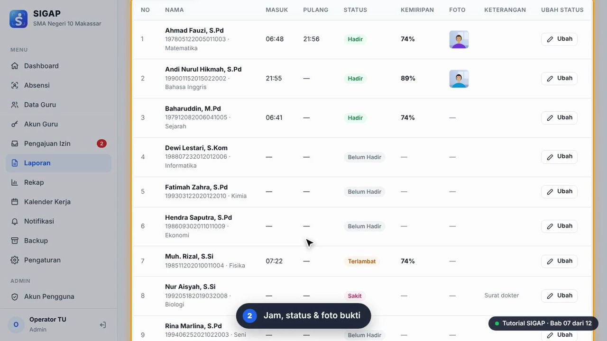
Rekap Bulanan
Untuk: Admin, Operator, pimpinan- Buka Rekap dan pilih bulan.
- Tabel memuat hari efektif, tepat waktu, terlambat, sakit, izin, cuti/dinas, alpa, dan persentase kehadiran. Hari libur tidak dihitung.
- Klik nama guru untuk melihat kalender riwayat kehadirannya.
- Klik Unduh Excel bila rekap perlu dilaporkan atau dicetak.
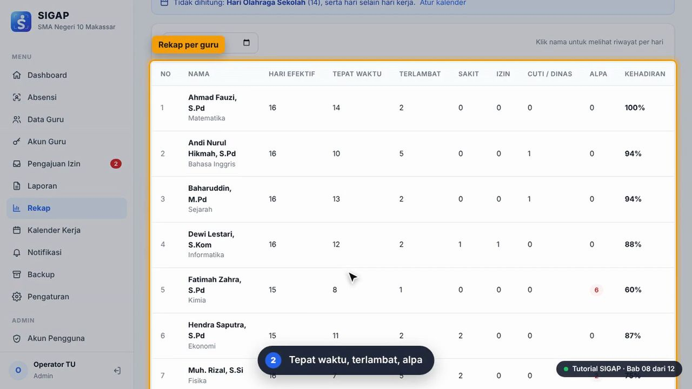
Kalender Kerja
Untuk: Admin- Buka Kalender Kerja. Warna hijau menandakan hari kerja, abu-abu hari libur.
- Centang hari kerja setiap minggu (bawaan Senin sampai Jumat), lalu klik Simpan.
- Tambahkan hari libur: isi rentang tanggal dan keterangan, lalu klik Tambah.
- Daftar libur tahun berjalan tampil di bagian bawah dan dapat dihapus.
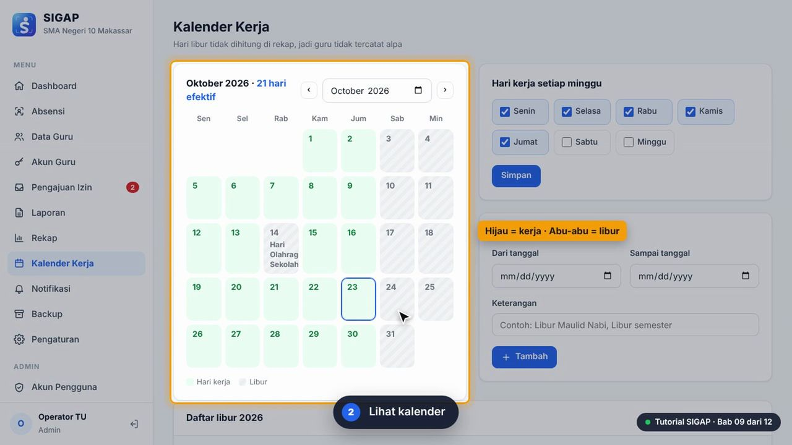
Backup & Pulihkan
Untuk: Admin- SIGAP membuat backup otomatis setiap hari. Riwayatnya tampil di tabel bawah.
- Untuk backup sendiri, klik Unduh backup. Centang opsi bila foto absensi ingin ikut disimpan.
- Untuk memulihkan data atau pindah komputer, pilih file backup pada kotak Pulihkan, lalu konfirmasi.
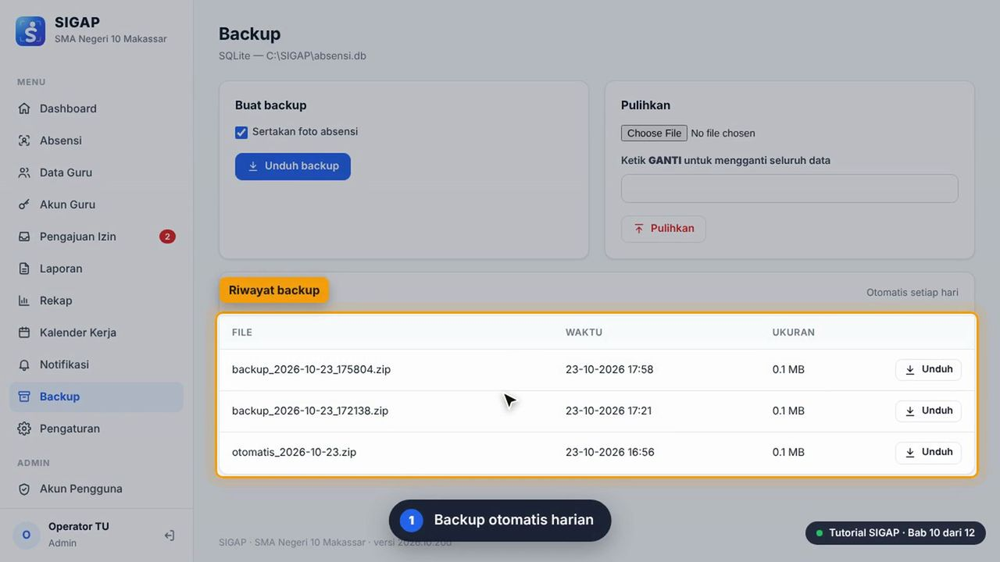
Portal Guru
Untuk: Guru- Buka link portal guru (/guru) dari HP, lalu masuk dengan username dan password.
- Menu Riwayat saya menampilkan kalender berwarna, jumlah tiap status, dan persentase kehadiran bulan ini.
- Menu Ajukan izin: pilih jenis (Sakit, Izin, Keluar Kota, Dinas Luar, Cuti), isi tanggal dan alasan, lampirkan foto surat bila ada (maksimal 5 MB), lalu Kirim pengajuan.
- Pantau status dan progres persetujuan di kotak Pengajuan saya.
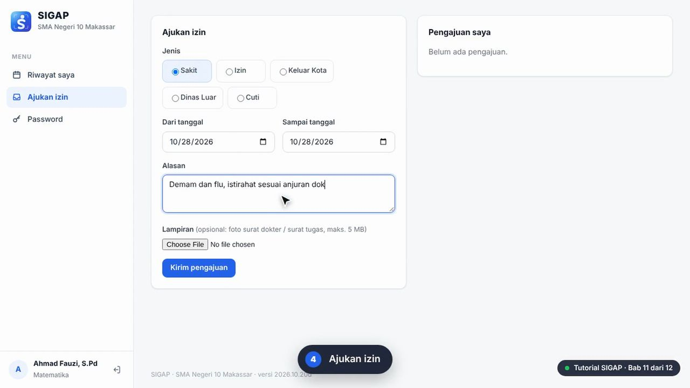
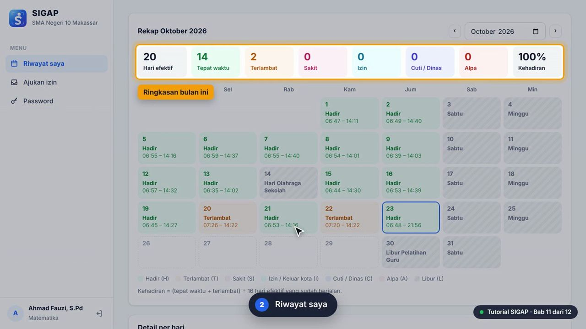
Portal Pimpinan
Untuk: Kepala Sekolah, Wakasek- Buka link portal pimpinan (/pimpinan) dari HP, lalu masuk dengan akun Kepala Sekolah atau Wakasek.
- Menu Persetujuan memuat izin yang menunggu. Baca detailnya, isi catatan bila perlu, lalu tekan Setujui atau Tolak.
- Menu Riwayat izin menampilkan keputusan yang sudah diambil.
- Menu Kehadiran hari ini menampilkan siapa yang sudah hadir, terlambat, atau belum hadir.
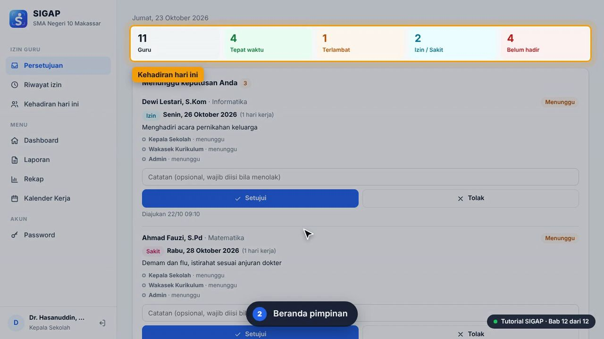
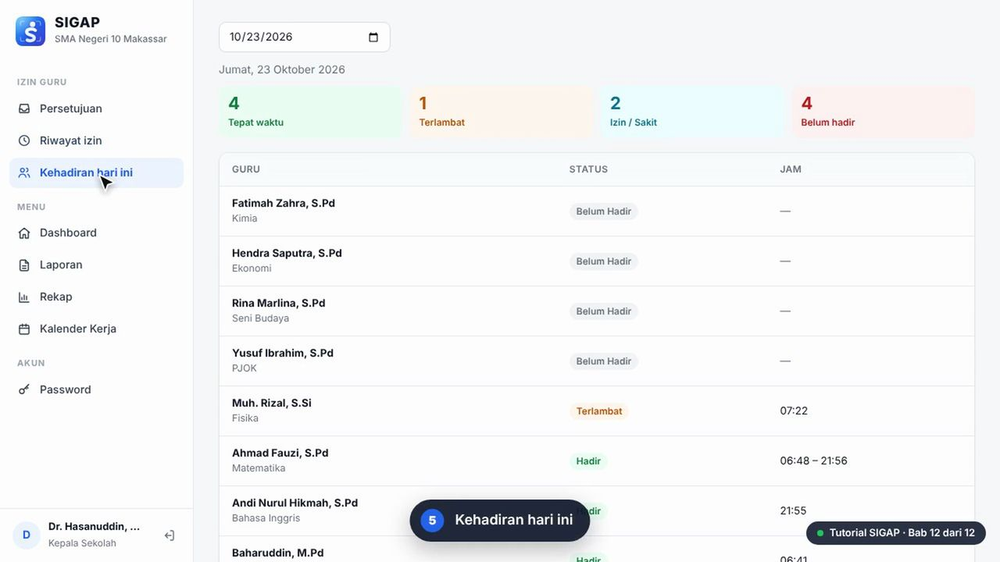
Masalah umum
Kamera tidak menyala
Izinkan akses kamera pada browser. Kamera hanya diizinkan bila SIGAP dibuka lewat http://localhost (atau 127.0.0.1) atau alamat https://. Untuk komputer lain di jaringan sekolah, gunakan HTTPS.
Wajah guru tidak dikenali
Pastikan cahaya cukup dan wajah tidak terlalu jauh dari kamera. Bila tetap gagal, daftarkan ulang wajah dengan 5 sampel dan centang Ganti sampel lama.
Portal guru atau pimpinan tidak terbuka dari HP
HP harus terhubung ke Wi-Fi yang sama dengan komputer SIGAP. Bila masih gagal, izinkan Python pada Windows Firewall (jaringan Private). Alamat yang benar ada di Pengaturan → Link & alamat website.
Guru lupa password
Admin membuka Akun Guru lalu klik Reset password. Guru akan diminta membuat password baru saat masuk.
Internet sekolah mati, apakah absensi tetap jalan?
Ya. Absensi tidak menunggu pengiriman pesan. Notifikasi ke kurikulum disimpan dalam antrean dan dikirim ulang otomatis setelah internet kembali.
Ke mana notifikasi kehadiran dikirim?
Ke bagian kurikulum lewat Telegram, WhatsApp, atau halaman Monitor Kurikulum. Pengaturannya ada di menu Notifikasi.